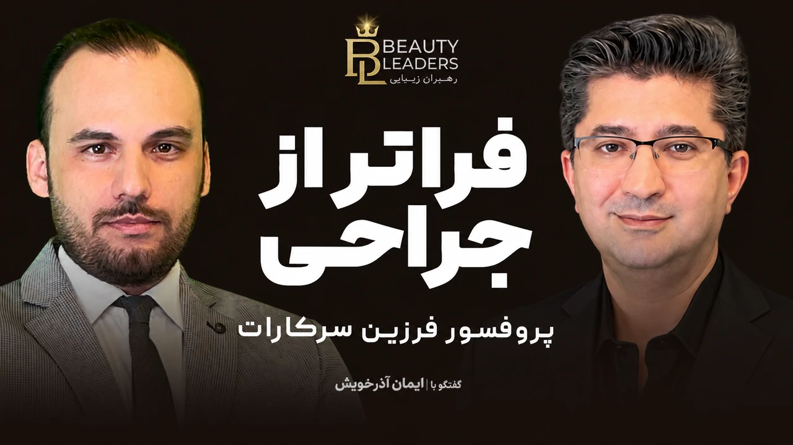
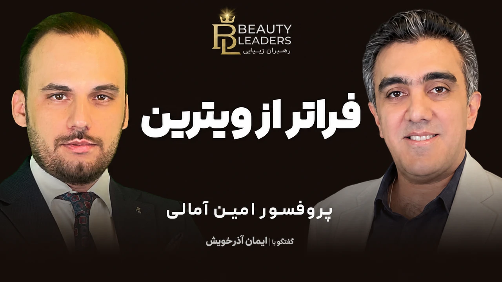
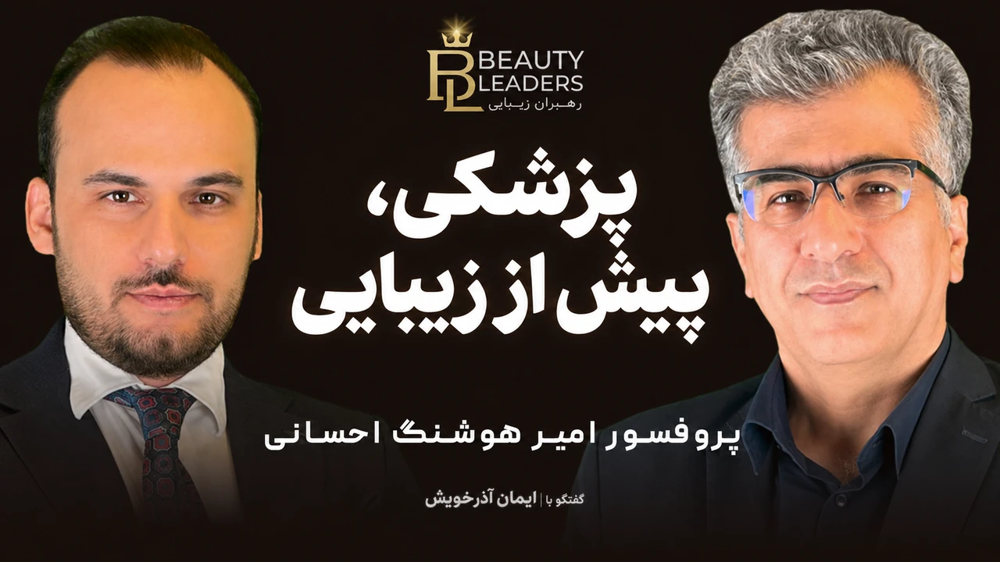
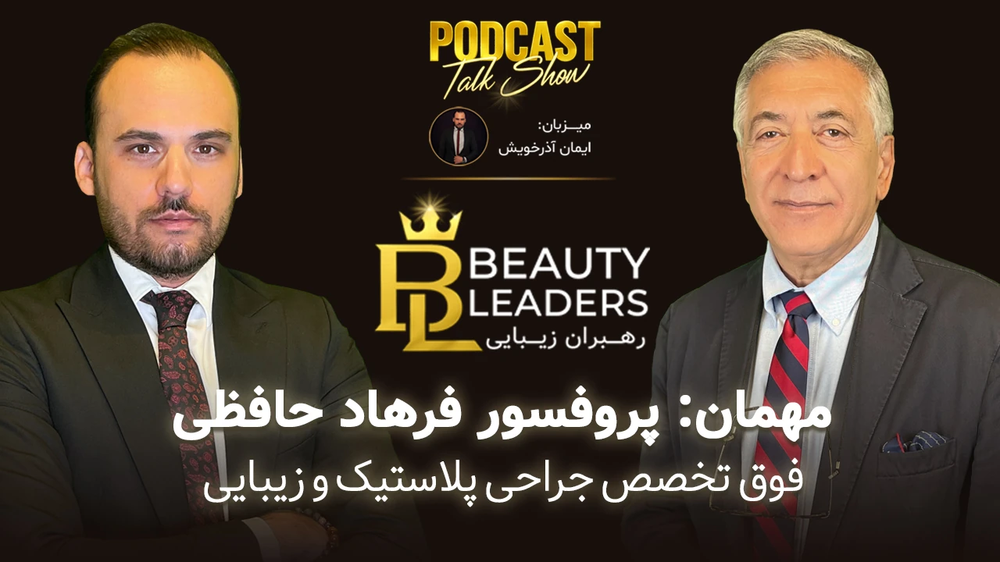
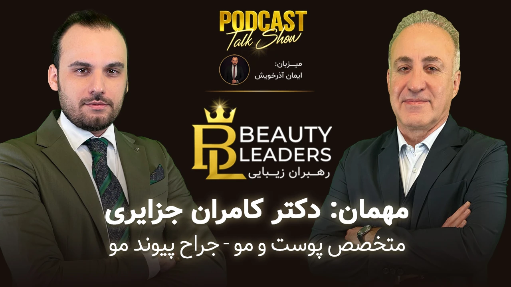
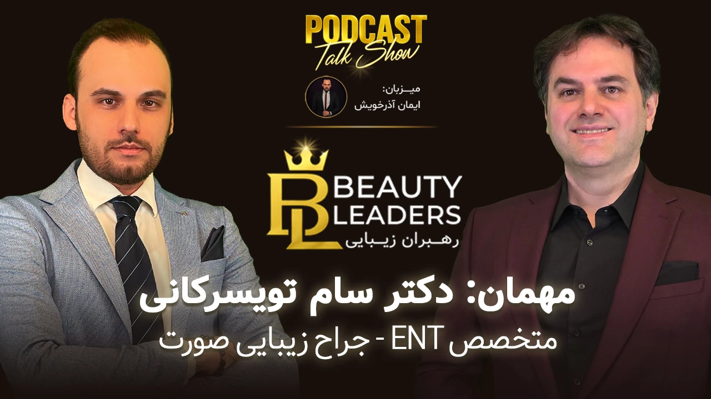

رهبران زیبایی ·
تشخیص جراح بینی معتبر از پزشک مشهور اینستاگرامی
پروفسور علیرضا محبی
استادتمام دانشگاه علوم پزشکی ایران؛ متخصص گوش، حلق و بینی و جراحی سر و گردن و دارای فلوشیپ راینولوژی، طبق معرفی برنامه
آرشیو رسانه
۲۹ گفتگوی منتشرشده با پزشکان و متخصصان؛ شامل دو مجموعه «رهبران زیبایی» و «سفیران زیبایی». در اینجا معرفی کوتاه هر مهمان را میبینید و برای تماشای ویدئو به یوتیوب میروید.
رهبران زیبایی ·
پروفسور علیرضا محبی
استادتمام دانشگاه علوم پزشکی ایران؛ متخصص گوش، حلق و بینی و جراحی سر و گردن و دارای فلوشیپ راینولوژی، طبق معرفی برنامه

رهبران زیبایی ·
دکتر امید کیهان
جراح دهان، فک و صورت و از بنیانگذاران آکادمی بینالمللی iFACE، طبق معرفی برنامه

رهبران زیبایی ·
پروفسور فهیمه عبداللهی مجد
متخصص پوست و مو؛ استادتمام دانشگاه علوم پزشکی شهید بهشتی و رئیس بخش پوست بیمارستان شهدای تجریش

رهبران زیبایی ·
پروفسور فرزین سرکارات
استادتمام جراحی دهان، فک و صورت و استاد مدعو دانشگاه Gulf Medical University امارات

رهبران زیبایی ·
پروفسور امین آمالی
متخصص گوش، حلق و بینی و جراحی سر و گردن؛ استاد دانشگاه علوم پزشکی تهران، طبق معرفی برنامه

رهبران زیبایی ·
دکتر سعید گل پروران
متخصص گوش، حلق و بینی و جراحی سر و گردن؛ استادیار دانشگاه علوم پزشکی تهران، طبق معرفی برنامه

سفیران زیبایی ·
دکتر رضا خدادادی
پزشک زیبایی و مدرس بینالمللی استتیک، طبق معرفی برنامه

سفیران زیبایی ·
دکتر طناز فخیم
متخصص پوست و مو، طبق معرفی برنامه

رهبران زیبایی ·
دکتر بهنام بهلولی
جراح دهان، فک و صورت و جراحی زیبایی صورت با تجربه فعالیت و آموزش در کانادا، طبق معرفی برنامه

رهبران زیبایی ·
پروفسور امیرهوشنگ احسانی
متخصص پوست و مو و استاد دانشگاه علوم پزشکی تهران، طبق معرفی برنامه

رهبران زیبایی ·
دکتر محمد گلشنی
متخصص پوست و مو و دارای سابقه فعالیت صنفی و علمی در درماتولوژی، طبق معرفی برنامه

رهبران زیبایی ·
پروفسور فرهاد حافظی
فوقتخصص جراحی پلاستیک و ترمیمی و استاد دانشگاه، طبق معرفی برنامه

رهبران زیبایی ·
دکتر محمد احمدی مقدم
فوقتخصص جراحی پلاستیک و ترمیمی، طبق معرفی برنامه

سفیران زیبایی ·
دکتر جمال زرگران
پزشک زیبایی و مدرس بینالمللی استتیک، طبق معرفی برنامه

رهبران زیبایی ·
دکتر کمال سید فروتن
فوقتخصص جراحی پلاستیک و ترمیمی، طبق معرفی برنامه

رهبران زیبایی ·
دکتر رضا وقردوست
فوقتخصص جراحی پلاستیک و ترمیمی، طبق معرفی برنامه

رهبران زیبایی ·
دکتر سامان طهماسبی
فوقتخصص جراحی پلاستیک و ترمیمی، طبق معرفی برنامه

سفیران زیبایی ·
دکتر الهام رحیمی
پزشک زیبایی و پژوهشگر حوزه درماتولوژی زیبایی، طبق معرفی برنامه

رهبران زیبایی ·
دکتر علی موسوی
فوقتخصص جراحی پلاستیک و ترمیمی، طبق معرفی برنامه

رهبران زیبایی ·
دکتر کامران جزایری
متخصص پوست و مو و جراح پیوند مو، طبق معرفی برنامه

رهبران زیبایی ·
دکتر سام تویسرکانی
متخصص گوش، حلق و بینی و عضو انجمن جراحی پلاستیک صورت آمریکا، طبق معرفی برنامه

رهبران زیبایی ·
دکتر زهرا استیلاف
پزشک زیبایی و مدرس فناوریهای پزشکی، طبق معرفی برنامه

رهبران زیبایی ·
دکتر شهریار حدادی
فوقتخصص جراحی پلاستیک و ترمیمی؛ عضو هیئت علمی دانشگاه علوم پزشکی تهران و رئیس بخش بیمارستان رازی، طبق معرفی برنامه

سفیران زیبایی ·
دکتر یاسمن کبیر
متخصص زنان و زایمان با تمرکز بر سلامت زنان و هورموندرمانی، طبق معرفی برنامه

سفیران زیبایی ·
دکتر مریم هلاکو
پزشک زیبایی و بنیانگذار مجموعههای سلامت و زیبایی، طبق معرفی برنامه

رهبران زیبایی ·
دکتر ایمان عباسی
متخصص پوست، مو و زیبایی، طبق معرفی منتشرشده برنامه

رهبران زیبایی ·
دکتر آذر محمدی
پزشک زیبایی و مدرس بینالمللی بادی کانتورینگ، طبق معرفی برنامه

رهبران زیبایی ·
دکتر شهریار نظری
متخصص گوش، حلق و بینی و جراح زیبایی صورت؛ رئیس بخش ENT بیمارستان بانک ملی، طبق معرفی برنامه

رهبران زیبایی ·
دکتر شقایق طهماسبی
پزشک زیبایی و مدیر کلینیک
موردی پیدا نشد.
این آرشیو از فهرست ۲۹ ویدئوی عمومی در خروجی رسمی کانال تنظیم شده است. تصویر کاور هر قسمت موقتاً در دو نسخه زبانی یکسان است و بعداً بهصورت مستقل قابل تعویض خواهد بود. اطلاعات تخصصی مهمانان از توضیحات منتشرشده برنامه گرفته شده و تنها منابع مستقلی که مشخصاً بررسی شدهاند در صفحات مربوط پیوند دارند.